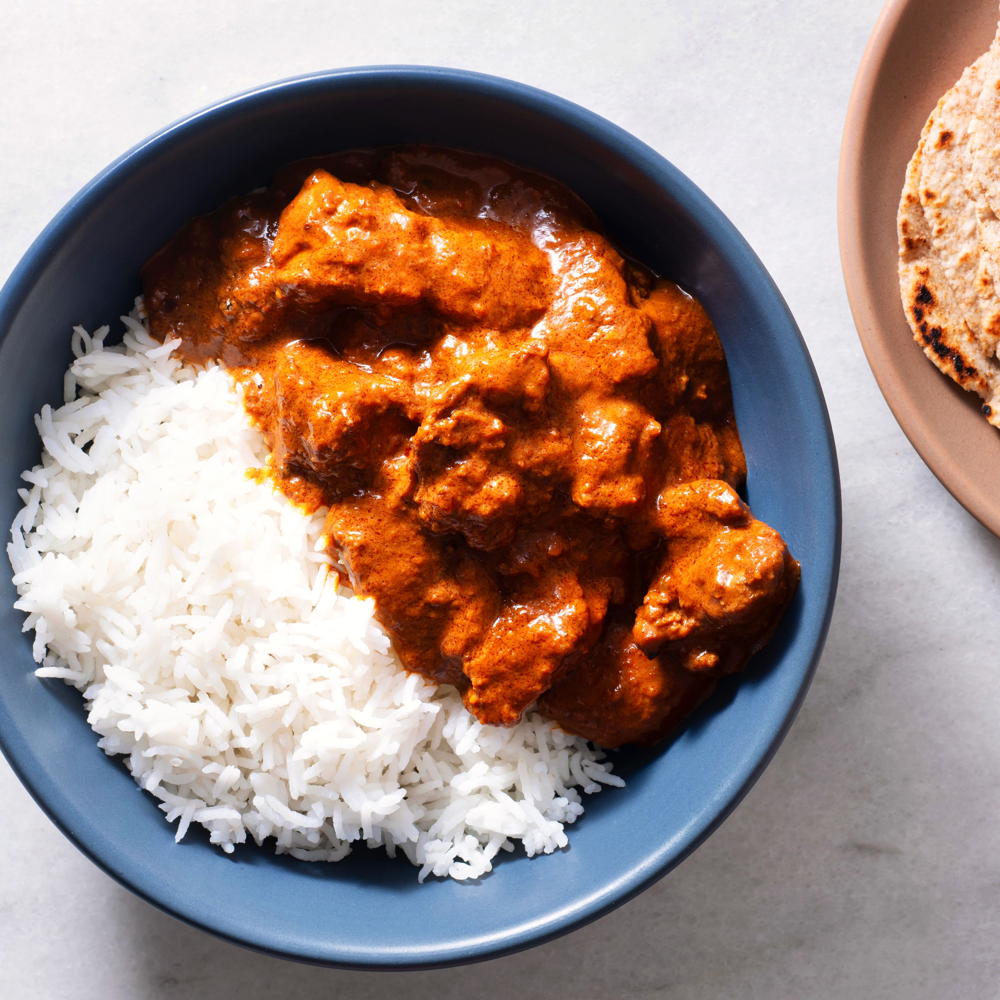

Anabolic Chicken Curry

Description
This has been the go-to dish I order at my local Indian restaurant so I finally just decided to recreate it at home and I couldn't be happier with the end result! I love that it has an abundance of spices leaving it
with incredible flavor. I also love that little bit of cream that's added at the end, even though it's not much it works wonders.
And of course it's got an abundance of sauce because that's what chicken curry is all about, that irresistible sauce for soaking up with naan bread or serving alongside rice.
Ingredients
- Chicken Thighs - 2 Lbs
- 1 Large Onion - Diced
- 3 Medium Tomatos or 2 Large Tomatos
- Garlic - 6 Peeled Cloves
- 1 can of lite Coconut Milk or 1/2 of regular Coconut Milk
- 2 cups of your choice of stock - Chicken, Vegetable, Beef, etc..
- 4 Tablespoons of oil or 4 Seconds worth of cooking spray
- *Optional* Cilantro
- Spices
- Cumin Seeds - 1 Tbsp
- Mustard Seeds - 1 Tbsp
- Curry Powder - 1 Tbsp
- Chili Powder - 1 Tbsp
- MSG - 1/2 Tsp
- Corriander - 1 Tbsp
- Fennel Seeds - 1 Tbsp
- Tumeric - 1 Tsp
Steps
- Start by prepping your onion, tomato, and garlic.
- Prep Chicken by removing any excess fat. Then cut thighs into medium sized cubes.
- Add 1 Tablespoon of oil/ 1 second of spray to prepped chicken, then add half of the spices and mix.
- Add 1 Tablespoon of oil/1 second of spray to med-heat pan, once hot add chicken and brown.
- Remove browned chicken from pan. Add 2 Tablespoons of oil to pan and add onion, cook until translucent.
- Add spices to pan and toast.
- Once spices are toasted add tomato and cook for 5 min on medium heat.
- Add Coconut Milk to pot and heat to boil. Allow the coconut milk to have water boil off until the milk takes on a slight red tone.
- Blend everything in the pot until smooth.
- Add everything back to the pot and add stock. Add chicken back to pan and bring to boil, then bring down to a simmer for 10 min.
- Add cilantro to pan with heat off and mix well.
- Serve with White Rice or Naan
- *Optional* Add chopped cilantro and yogurt mixed w/ salt to top of curry.
Please view our other Anabolic Recipes.
- Anabolic Chicken Taquitos
- Anaboilc Hamburgers